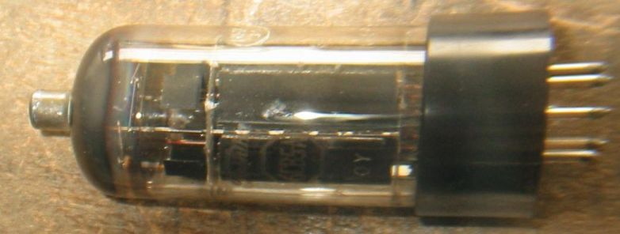
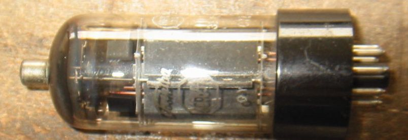
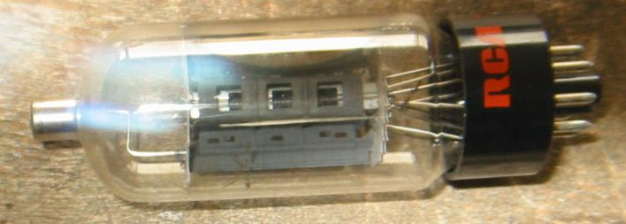

6CB5について
Toshiba6CB5A 807の代わりに使用したもの。
上側はかなり酷使したのでエミ減になっています。NHK35のマークがある。
センターキー折れ、ベースが焼け焦げて1部が欠けています。これはJUNK で
手に入れたときにそうなっていました。
下側はまだちゃんと使えます。しかしベースの焼けこげは同じようにあります。
東芝ではこの球を元にオーディオ管6GB8を開発した、というのはよく知られた話
です。確かにこのブラックプレートでジャンボシェルの球は格好がいいです。


RCA 6CB5A NOS

TV水平出力管のページに戻る